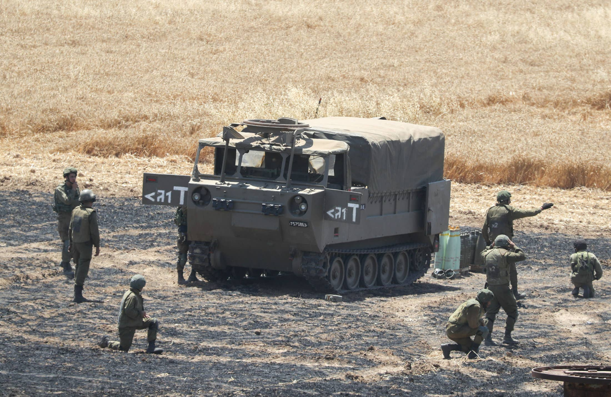

Gaza Flare-up: Heavy Rocket Fire From Gaza Bombards Be'er Sheva, Ashdod
Open gallery view
Fighting between Israel and Hamas enters day five, and escalated in what has become the heaviest flare-up since the 2014 Gaza war.At least 126 people were killed in the Strip and eight in Israel, in the most intensive aerial exchanges in years.
Israel carried out hundreds of air and ground strikes in Gaza, as Palestinian militants fired more than 1,700 rockets at central and southern Israel since Monday.
The fighting prompted international concern that the situation could spiral out of control, as well as mediation efforts for a ceasefire.
Tensions had been building up over the past week, with clashes between Israeli forces and protesters in Jerusalem's Sheikh Jarrah and the Temple Mount, and spilled into violent attacks by civilians across Israel, targeting both Jews and Arabs.
LIVE UPDATES
8:21 A.M. 11 killed in the West Bank in past 24 hours, Palestinian Health Ministry says
11 people have been killed in West Bank and 251 have been injured, according to the Palestinian Health Ministry.Of the 251 injured, 26 are in serious condition.
(Jack Khoury)
8:18 A.M. 200 rockets fired in 12 hours into Israel, IDF says
From 7 P.M. Friday to 7 A.M. Saturday, 200 rockets were launched into Israeli territory and an additional 30 launches fell within the Gaza strip, the IDF says.
IDF Air defense soldiers intercepted mroe than 100 rockets, in accordance with protocol, the IDF added.
(Almog Ben Zikri)
7:21 A.M. Rocket shrapnel hit building in Be'er Sheva
During Friday night's heavy rocket fire, some rocket shrapnel hit a building in Be'er Sheva.No one was injured.
(Almog Ben Zikri)
7:07 A.M. Rocket fire returns to Be'er Sheva
Rocket fire resumes above Be'er Sheva after three hours of quiet.The cities of Be'er Sheva, Ashdod and other communities in southern Israel were targeted by rocket fire from Gaza for most of Friday night and Saturday morning.
(Haaretz)
6:35 A.M. Gaza death toll includes 31 children
The Gaza Ministry of Health has reported 126 deaths so far, including 31 children and teenagers and 20 women.(
Jack Khoury )
6:26 A.M. 7 from same family killed in IDF attack in Gaza
Two women and five children, all members of the Abu Hatab family, were killed last night in an IDF attack on the Al-Shati refugee camp in the northern Gaza Strip, according to reports from Gaza.
A five-month-old baby is reportedly the only survivor of the assault.The Palestinians report that the baby was found in the rubble of the house with his mother dead, shielding him with her body.
(Jack Khoury)
6:21 A.M. Heavy rocket fire in the south during the night
A heavy barrage of rockets was fired during the night towards the south.There was direct damage to homes in Ashdod and Sderot, but there were no casualties.
Rockets were fired at the Gaza Envelope, Sderot, Ashkelon, Be'er Sheva, Ashdod, Gan Yavne and many other localities in the area.
(Almog Ben Zakri)
6:20 A.M. IDF attacks in Gaza continued throughout the night
The IDF announced yesterday that it had attacked a number of Hamas targets, including rocket launching stations, the organization's senior office, homes of operatives and targets of the organization's naval force.
During the night, an IDF aircraft attacked a number of launchers and two Hamas squads, the IDF spokesman said.It was also reported that an IDF aircraft attacked a number of Hamas rocket launchers in Khan Yunis and Gaza City.
(Yaniv Kubovitch)
6:15 A.M.Hezbollah operative crossed into Israel, shot by IDF
Citizens from Lebanon broke through the border fence in Metula yesterday, infiltrated Israel and set a fire.IDF tanks fired at them and, according to an army statement, tried to return them to Lebanese territory.
In Lebanon, it was reported that one of them was shot dead, and Hezbollah announced that he belonged to the organization.The killer was identified as 21-year-old Muhammad Tehan.
According to the IDF, the demonstration near the border fence was attended by about 20 people carrying Palestinian flags.Three of them cut the border fence and infiltrated Israeli territory, joined by four others, who started the fire.They withdrew after a tank fired two warning shots at them.The army said one of them was shot in the leg and returned wounded to Lebanese territory.
(Jack Khoury)
3:03 A.M. Direct rocket hit to building in Ashdod
A rocket fired from the Gaza Strip hit a building in Ashdod.Magen David Adom emergency services reported that the apartment that was damaged on the sixth floor had three occupants, who were in a protected room and were not harmed.
Medical officials treated ten victims for anxiety, and evacuated two of them to the hospital.In the barrage of rockets towards the city, a factory in the port of Ashdod was also hit, causing a fire.MDA reported that there were no casualties in this incident either.
(Josh Breiner)
2:02 A.M.Morocco to send 40 tons of aid to Palestinians
Morocco's King Mohammed VI on Friday ordered 40 tons of aid for Palestinians to be shipped to the West Bank and Gaza following recent violence.
The aid includes food, medicine and blankets and will be carried by military aircrafts, the foreign ministry said in a statement.Morocco also denounced 'the violent acts perpetrated in occupied Palestinian territories,' and reiterated support for a two-state solution to the Israeli-Palestinian conflict.(
Reuters)
12:45 A.M. IDF says attacked head of Hamas security forces
The IDF announced that they attacked the head of Hamas security forces in the Gaza Strip.According to the announcement, an IDF aircraft attacked the operational office in Ramel of Tawfiq Abu Naim, the head of Hamas security forces, which served as a military compound.(
Yaniv Kubovitch )
12:42 A.M. Sirens sound in Be'er Sheva
FRIDAY
11:23 P.M.Three rockets launched at Israel from Syria
An IDF spokesman announced this evening that three rockets were launched from Syrian territory towards Israel, two of which landed in open areas in the southern Golan Heights, and one fell in Syrian territory.
(Noa Shpigel)
10:21 P.M. Gaza death toll climbs to 126, including 31 children
Health authorities in Gaza have updated their death toll from the recent Israeli operation to 126, including 31 children and 20 women.
The authorities also said that 950 Palestinians were injured in the Strip.
(Jack Khoury)
9:02 P.M. Rocket sirens wail in Be'er Sheva in southern Israel
8:38 P.M. Israelis in Lebanon border town told they can leave their homes again
Israelis in the northern Israel town of Metula have been informed by the local council that they are permitted to leave their homes, after Lebanese protesters congregated at the border fence nearby.
Metula local council said the situation is under control, but still asked the population to refrain from going near the border fence.
(Noa Shpigel)
8:27 P.M. U.S. official Hady Amr lands in Tel Aviv to meet with Israeli, Palestinian
Deputy Assistant Secretary for Israel and Palestinian Affairs Hady Amr landed in Tel Aviv on Friday as the Biden administration works to de-escalate tensions between Israel and the Palestinians amid the latest violent flare-up.
'Amr arrived to Tel Aviv today to reinforce the need to work toward a sustainable calm, recognizing Israel’s right to self-defense.Israelis and Palestinians deserve equal measures of freedom, security, dignity and prosperity,' the Palestinian Affairs Unit of the U.S. Embassy in Jerusalem tweeted.The Biden administration had announced Wednesday that it was sending Amr to Israel 'immediately.'
(Ben Samuels and Jonathan Lis)
8:25 P.M. Direct hit on Israeli home near Gaza border, no casualties
An Israeli home in the border town of Sderot was directly hit by a rocket from the Gaza Strip, though no injuries or casualties were reported.Rocket sirens also sounded in the nearby city of Ashkelon.
(Almog Ben Zikri)
8:23 P.M. IDF: 140 Gaza rockets fired at Israel throughout day
The Israeli army has reported that over 140 rockets were fired toward Israel from 7 A.M. to 7 P.M. on Friday.From this number, 30 failed to make it out of the Strip.
(Almog Ben Zikri)
8:09 P.M. IDF fires at Lebanese protesters, northern town residents told to stay home
The Israeli army has fired at Lebanese demonstrators who gathered by the border fence in the last hour.The local council of Metula, one of the northernmost towns in Israel, told its residents to stay at home.
(Noa Shpigel)
7:57 P.M. Sirens sound across Gaza border towns
7:55 P.M. IDF says it struck the homes of three Hamas operatives
An IDF spokesman said that fighter jets hit the homes of three Hamas operatives in the Gaza Strip, which were used for storing weaponry.
The army named them as Shadi Abed Alhadi, a Hamas paratrooper from central Gaza, whose home contained military equiptment; Osama Shehadeh, from the northern Gaza Strip, whose house held military infrastructure; and Zakaria Zarendah, whose northern Gaza Strip home contained military infrastructure and a warehouse.
(Yaniv Kubovich)
7:40 P.M. IDF says it struck high-rise building and tunnel
The Israeli army spokesperson says Israeli fighter jets hit a multi-storey building in the Gaza Strip containing a Palestinian bank serving Hamas.
The IDF also announced that its jets destroyed a Hamas tunnel containing military equipment in the southern Gaza Strip.
(Yaniv Kubovich)
7:08 P.M.Lebanese man hit by Israeli fire succumbs to his wounds, report says
A Lebanese man who was hit by Israeli gunfire after trying to breach the Israel-Lebanese border succumbed to his wounds.
Earlier, a few dozen people demonstrated on the Lebanese side of Israel's northern border, seven of whom managed to cross into Israel and ignite a fire.They came close to the northern town of Metula, but fled back to Lebanon after the Israel Defense Forces opened fire.
(Jack Khoury)
6:20 P.M.Israeli army: Airforce attacked Hamas munitions site
The IDF's spokesperson said that the army's fighter jets struck a Hamas munition production site in the northern Gaza Strip.
(Yaniv Kubovich)
6:03 P.M. IDF says it struck Hamas naval targets
The Israeli army’s spokesperson said that they have hit dozens of Hamas naval targets, including vessels, arms depots, observation posts, and military complexes that served Islamist movement’s navy.
(Yaniv Kubovich)
6:00 P.M.Police disperse Sheikh Jarrah demonstrators with water cannons, stun grenades
Israeli police have used water cannons and stun grenades against a joint Israeli-Palestinian demonstration in the East Jerusalem neighborhood of Sheikh Jarrah.The protestors claimed that the police response came without any prior provocation,
(Nir Hasson)
5:37 P.M. Rocket strike causes power outages in southern Israel
The Israel Electric Corporation announced disruptions to the power supply in the communities of Lahavim, Eshkolot, Lahav and the surrounding area due to a rocket strike on a high-voltage wire in one of the barrages.One of the neighborhoods in the city of Be'er Sheva is also experiencing outages.(
Almog Ben Zikri )
5:26 P.M.Netanyahu: 'We'll do everything in order to restore security to our cities.'
Prime Minister Benjamin Netanyahu said at the end of a situation assessment at military headquarters in Tel Aviv Friday that Hamas will continue to pay a heavy price.
'I said we would strike Hamas and other terror groups very hard – and we're doing that,' he said.'In the past 24 hours, we struck underground targets; Hamas thinks they can hide there, and they cannot hide there.
'They attacked us on our holiday, they attacked us in our capital, they fired missiles at our cities, they're paying for it and will pay a heavy price.This isn't over yet.We will do everything in order to restore security to our cities and citizens,' he said.(
Yaniv Kubovich )
5:11 P.M. Sirens sound in Be'er Sheva, Segev Shalom, Tel Sheva and the Lakiya area
5:03 P.M. Sirens sound in Ashkelon, Be'er Sheva, Zikim and Kerem Shalom area
4:56 P.M. IDF assassination attempt on senior Hamas officials fails
An attempt by the Israel Defense Forces to assassinate a number of senior Hamas commanders in recent days failed.The defense establishment is trying to ramp up assassinations on senior members of the organization, and has decided that every senior Hamas official is a target.They believe that these officials are now hiding in the underground tunnels built for them.(
Yaniv Kubovich )
4:26 P.M. Man injured by rocket near Be'er Sheva
A man was lightly injured by a rocket fired from Gaza when it landed near Route 40, by the southern city of Be'er Sheva.The strike damaged a number of vehicles on the road.One driver told Haaretz: 'I drove really close to it, I'm lucky that my children weren't here with me.'(
Almog Ben Zikri )
4:07 P.M.Israeli strikes overnight targeted Hamas tunnels, dozens believed dead
Israeli military forces targeted a network of defensive underground tunnels in the Gaza Strip, built by Hamas in past years, in extensive strikes overnight Thursday.The IDF says that dozens of Hamas operatives were killed in the strikes, but as many bodies are still believed to be buried in the rubble, the exact death toll might take time to determine.
The strikes represent a serious escalation in the cross-border fighting, and the operation is one of the IDF’s largest in Gaza in past years.As about 160 Israeli jets were ready to take off, ground forces began a maneuver as if they were preparing to enter the Strip.Hamas forces then quickly entered the tunnels.The Air Force struck targets for over 40 minutes, while ground forces were on standby to shoot anyone emerging from the tunnels.
(Yaniv Kubovich)
4:00 P.M. Sirens sound in southern Israel city of Be'er Sheva
Rocket sirens are going off in the southern Israeli city of Be'er Sheva, as well as in the Gaza border areas.
(Haaretz)
3:18 P.M.Palestinian Health Ministry: IDF shoots dead man in West Bank town
The Palestinian Health Ministry has reported that one person was killed by IDF gunfire during clashes in the West Bank town of Ya'bad, near Jenin.
(Jack Khoury)
2:17 P.M. IDF: Palestinian shot dead after he tried to stab soldier
Israel's military said a Palestinian tried to stab a soldier near the West Bank city of Ramallah.The soldier shot the attacker, who Palestinian health officials reported has died.
(Yaniv Kubovich)
1:55 P.M. IDF strikes Islamic Jihad cell
The Israeli military said that it identified and carried out an airstrike on a cell of Islamic Jihad militants in the northern Gaza Strip.
(Haaretz)
1:19 P.M.Israeli army strikes anti-tank unit in Gaza City
The Israeli military said it struck an anti-tank missile launcher in Gaza City.According to the military's statement, the unit was planning to shoot at Israel.(
Almog Ben Zikri)
1:14 P.M. Israelis in Gaza border communities ordered not to leave home
Authorities in the Sdot Negev Regional Council, a cluster of Jewish communities near the Gaza border, told residents to remain at home.
There was no official confirmation of any concrete threat in the area.
(Almog Ben Zikri)
1:00 P.M. IDF told foreign media it has ground forces in Gaza, but then apologized for misleading them
Shortly after midnight on Friday, leading international news outlets released breaking news updates saying that Israel Defense Forces ground troops had entered Gaza.The development, which made top headlines all over the world, was described as a major escalation in the ongoing conflict between Israel and Hamas.
But within hours, all of these outlets retracted those reports.In conversations with Haaretz, several foreign correspondents working in Israel described how they were told on the record by the IDF Spokesperson’s Unit that a ground invasion had begun – only to later receive a retraction and apology from the military for the misleading information.The IDF Spokesperson, Brig. Gen.Hidai Zilberman, told Israel's Kan Radio that there 'could have been a mistake' in how the military described the situation to the foreign media.
(Amir Tibon and Allison Kaplan Sommer)
10:50 A.M.Israeli army strikes Hamas outposts in the Gaza Strip
Israeli army aircraft attacked several Hamas outposts in northern and central Gaza Strip Friday, the army said.
(Yaniv Kubovich)
10:23 A.M.Israeli army intecepts Gaza drone, IDF says
The Israeli army shot down an unmanned aerial vehicle which has entered Israeli airspace from the Gaza Strip, army said in a statement Friday.
(Yaniv Kubovich)
10:00 A.M. Death toll in Gaza climbs to 119, almost a third of whom are women and minors, Palestinian Health Ministry says
Death toll in Gaza climbs to 119, including 31 minors and 19 women, the Palestinian Health Ministry in the Gaza Strip says Friday.
According to Gaza authorities, 830 people were wounded as a result of the ongoing Israeli airstrikes over the past days.
(Jack Khoury)
09:30 A.M.Israeli woman, who was wounded on her way to shelter, dies
A 50-year-old Israeli woman, who was seriously wounded while she was on her way to shelter, was pronounced dead Friday.
(Bar Peleg)
8:46 A.M.Israel: 190 rockets fired overnight
The Israeli military said 190 rockets were launched from the Gaza Strip within 12 hours.About 30 of them are said to have landed in the Strip and dozens more intercepted.
(Yaniv Kubovich)
8:03 A.M. Gaza death toll climbs to 115, 600 reported wounded, Health Ministry says
The Palestinian Health Ministry in Gaza updated the death toll to 115, including 27 minors and 11 women.
According to Gaza authorities, 600 people were wounded by Israeli strikes over the past days.
(Jack Khoury)
7:38 A.M.Israeli army strikes 150 Hamas targets in northern Gaza
The Israeli military said it struck some 150 Hamas targets in the northern Strip, including underground infrastructure used by the militant group.
More than 160 jets have carried out the strikes the army said in a statement.
(Yaniv Kubovich)
7:18 A.M. Father, three daughters killed in Gaza following airstrike, sources say
A father and three of his daughters were killed in northern Gaza following an Israeli army airstrike, medical sources in the Gaza Strip say.
Many residents, who live in the northern part of the Strip, left their homes tonight, supposedly because of a potential IDF strike.
(Jack Khoury)
4:17 A.M. Sirens renew in Ashdod, surrounding communities
After over an hour of quiet, rocket launches from Gaza to Ashdod and other southern Israeli communities rewnewed, with sirens sounding across the region.
(Haaretz)
2:31 A.M. 60-year-old man in serious condition after direct hit in Ashkelon
Medics are treating a 60-year-old man who is in a serious condition after being hit by rocket debris, an MDA spokesperson said.
The man was evacuated to Barzilai Medical Center in Ashkelon.
(Aaron Rabinowitz)
2:30 A.M.UN to proceed with security council meeting despite U.S. objection
The UN Security Council will publicly discuss the worsening violence between Israel and Palestinian militants on Sunday, diplomats said after the United States earlier objected to a meeting on Friday.
(Reuters)
12:32 A.M.Netanyahu: We will continue to attack Hamas, operation will continue as needed
Prime Minister Benjamin Netanyahu said last night (Friday) that Hamas will pay a 'very heavy price' for their actions.
'We will continue to do what we're doing with great intensity.The last word has not yet been uttered, and this operation will continue as long as necessary.'
Netanyahu added that 'we will give complete backing to the police, the Border Police and the rest of the security forces to restore law and order to the cities of Israel - we will not tolerate anarchy.'
Netanyahu added, 'I call once again on the citizens of Israel not to take the law into their own hands.'
(Jonathan Lis)
Posted On: 2021-05-14T00:00:00

Content Date: 2021-05-14
Download Date: 2021-05-19
Document ID: L0C04CID9